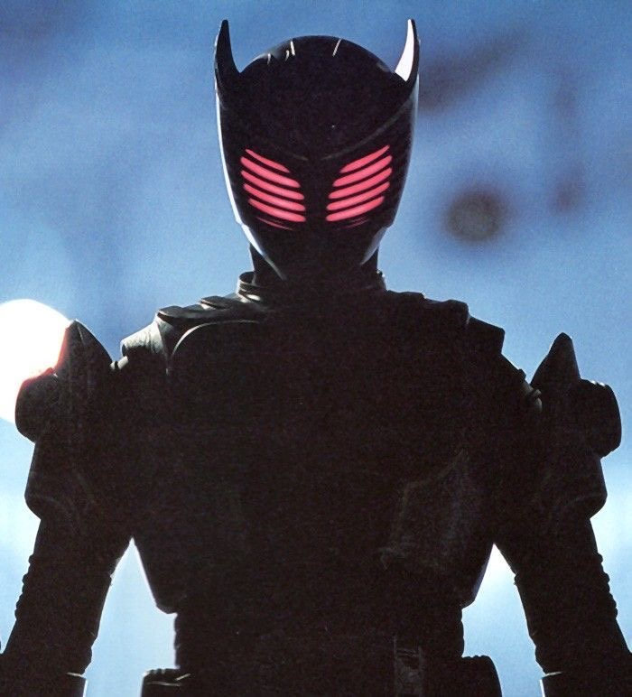

Kamen Rider Ryuki, what was Ryuga's motive?

Ryuga Banjo, also known as Kamen Rider Ryuga, has a complex and evolving motive in Kamen Rider Ryuki. Initially, Ryuga appears as an antagonist to the protagonist, Shinji Kido (the main Kamen Rider Ryuki). However, his motives become clearer as the series progresses.
At first, Ryuga is driven by a desire for vengeance and personal gain. His main goal is to defeat the other Riders in the Mirror World and become the last one standing, which would grant him the ability to make a wish granted by the mysterious contract with the Dragon. Ryuga is initially portrayed as ruthless, showing little regard for others in pursuit of his goal. His actions often come across as cold and calculating.
However, his motivations are rooted in deeper emotions. Ryuga’s tragic backstory involves being manipulated by Shiro Kanzaki, the creator of the Rider battle and the one behind the Mirror World. Kanzaki offers Ryuga a chance for revenge against those who have wronged him, particularly targeting his former partner, Ren Akiyama (Kamen Rider Knight), and other Riders.